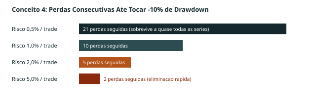

Licao 3 (Nivel 3): Risco por Trade e Sobrevivencia
Aviso: Ferramenta educativa. Nao constitui recomendacao financeira.
1. O Stop define o tamanho da posicao
Divide o risco maximo em dinheiro pela distancia percentual ate ao stop.

2. Calculadora Educativa
3. Mini-Quiz
- Pergunta 1: Com 2% de risco por trade, quantas perdas seguidas atingem -10%? (5 perdas).
- Pergunta 2: Porque usar teto de risco aberto? (Protege a conta nas piores sequencias).